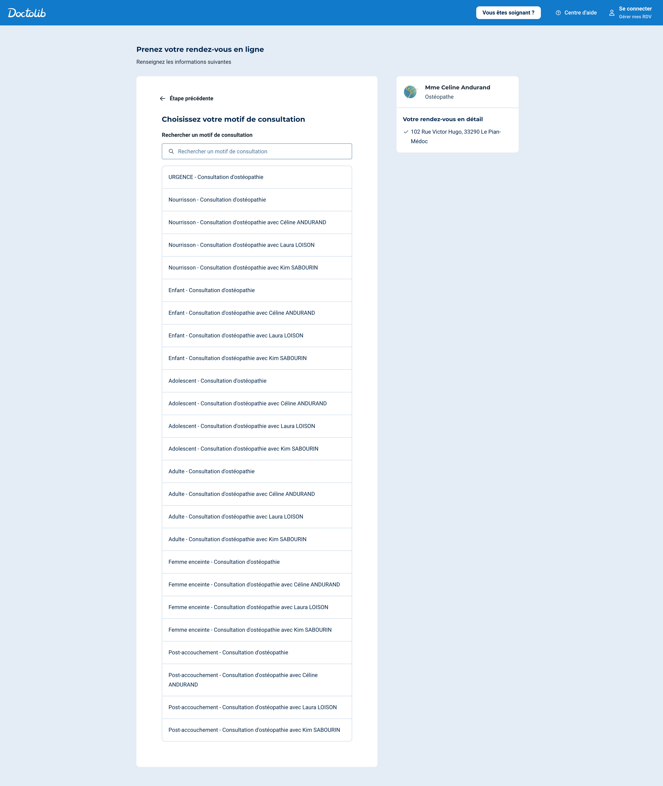

Bienvenue aux cabinets
d'ostéopathie
du Pian-Médoc
Une prise en charge globale et personnalisée pour votre santé et votre bien-être.
Nous accompagnons nourrissons, enfants, adolescents, adultes, femmes enceintes et sportifs.

Céline Andurand, Kim Sabourin et Laura Loison
Ostéopathes DO
PÔLE SANTÉ « VICTOR HUGO »
Du lundi au samedi
Voir le cabinet → 📅 Prendre RDV – Cabinet 1 📅 Prendre RDV – Cabinet 2 📞 Appeler
Bryan Salmon et Antoine Cazot
Ostéopathes DO
MAISON MÉDICALE « PORTES DU MÉDOC » – 1er étage
Du lundi au samedi
Voir le cabinet → 📅 Prendre RDV 📞 Appeler